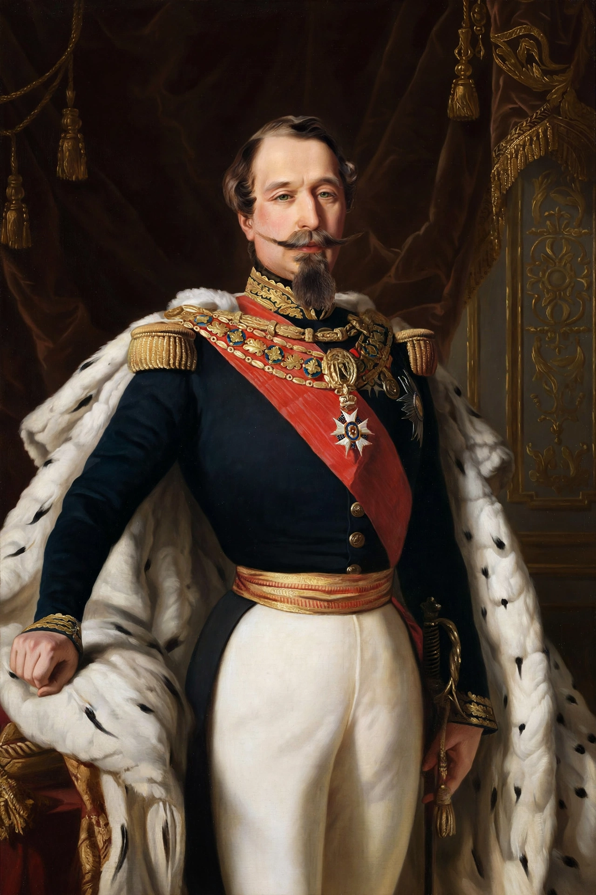

From Wikipedia, the free encyclopedia
| Napoleon III | |
| Born | 20 April 1808, Paris, French Empire |
|---|---|
| Died | 9 January 1873 (aged 64), Chislehurst, England |
| Reign | Emperor of the French: 2 December 1852 – 4 September 1870 |
| Earlier office | President of the French Republic, 1848–1852 (sole president of the Second Republic) |
| Spouse | Eugénie de Montijo |
| House | Bonaparte |
| Burial | St Michael's Abbey, Farnborough, England |

Napoleon III (born Charles-Louis Napoléon Bonaparte; 20 April 1808 – 9 January 1873) was the nephew of Napoleon I and the last monarch of France. Elected president of the French Second Republic in 1848, he seized dictatorial power in the coup d'état of 2 December 1851 and proclaimed himself Emperor of the French a year later, founding the Second Empire. His regime combined authoritarian rule with ambitious programmes of economic modernisation, public works, and an assertive foreign policy, before collapsing in the Franco-Prussian War, when he was captured at the Battle of Sedan (1870).
Louis-Napoléon was the third son of Louis Bonaparte, King of Holland, and Hortense de Beauharnais; Napoleon I was his uncle. Raised in exile in Switzerland and Germany after 1815, he absorbed the Napoleonic legend and twice attempted premature coups — at Strasbourg (1836) and Boulogne (1840) — the second earning him imprisonment in the fortress of Ham, from which he escaped in 1846 disguised as a workman. In the wake of the Revolution of 1848, which established universal male suffrage, he returned to France, won election to the National Assembly, and in December 1848 was elected president by a landslide, trading on his name and presenting himself as the candidate of order, prosperity, and national glory.
Barred by the constitution from a second term, Louis-Napoléon dissolved the Assembly on 2 December 1851 — the anniversary of Austerlitz and of his uncle's coronation — suppressing resistance in Paris and the provinces at the cost of hundreds of lives. A plebiscite ratified his rule, and on 2 December 1852 he was proclaimed Napoleon III. The authoritarian Empire of the 1850s rested on universal suffrage, censorship, and a managed legislature; in the 1860s, facing growing opposition, he conceded liberal reforms (freer press, fuller parliamentary rights), creating the "Liberal Empire" confirmed by plebiscite in May 1870.
The reign transformed France's economy and capital. Baron Haussmann rebuilt Paris with grand boulevards, parks, water and sewer systems — the city of the modern imagination. Railways grew from a few thousand kilometres to a national network; the Crédit Mobilier and new banks channelled investment; the Cobden–Chevalier Treaty (1860) opened trade with Britain. France hosted two great Paris Exhibitions (1855, 1867), and the Suez Canal, built by Ferdinand de Lesseps, opened in 1869.
Abroad, Napoleon III fought alongside Britain in the Crimean War (1853–56), intervened in Italy's unification wars against Austria (1859), expanded the colonial empire in Algeria, Senegal, Indochina, and New Caledonia, and launched the disastrous French intervention in Mexico (1861–67), installing Maximilian as emperor before withdrawing under American pressure. His diplomacy failed to prevent Prussia's rise: bamboozled by Bismarck over the Hohenzollern candidacy and the Ems Dispatch, France declared war in July 1870. Encircled at Sedan, Napoleon III surrendered with over 100,000 men on 2 September 1870. Paris proclaimed the Third Republic two days later. Released by the Prussians in 1871, he settled at Chislehurst in Kent, England, where he died in 1873 after surgery for bladder stones. His only son, the Prince Imperial, was killed fighting with the British army in the Zulu War of 1879.